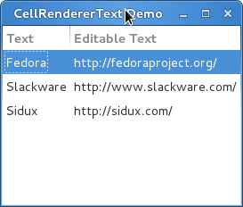
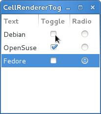
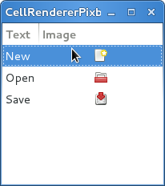
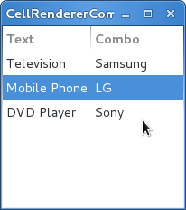
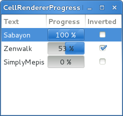
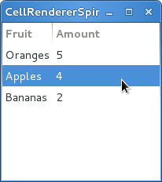

单元格渲染器（CellRenderers）¶
Gtk.CellRenderer 控件用来在例如 Gtk.TreeView 或 Gtk.ComboBox
这样的控件中显示信息。这些单元格渲染器与相关联的控件联系紧密并且非常强大，有大量的配置选项用来以
不同的方式来显示大量的数据。有七种 Gtk.CellRenderer 可以用于不同的目的。:
Gtk.CellRendererTextGtk.CellRendererToggleGtk.CellRendererPixbufGtk.CellRendererComboGtk.CellRendererProgressGtk.CellRendererSpinnerGtk.CellRendererSpinGtk.CellRendererAccel
CellRendererText¶
Gtk.CellRendererText 在单元格中渲染给定的文本，并使用其属性提供的字体、颜色与style信息。
如果 “ellipsize” 允许，文本太长时会显示为带省略号的形式。
默认 Gtk.CellRendererText 控件中的文本是不可编辑的。可以通过其 “editable” 属性设置为
True 来改变该行为。
cell.set_property("editable", True)
可编辑之后你就可以连接 “editable” 信号来更新你的 Gtk.TreeModel 了。
CellRendererText 对象¶
-
class
Gtk.CellRendererText¶ 创建一个新的
Gtk.CellRendererText的实例。使用对象属性来调整文本的绘制。 与Gtk.TreeViewColumn一起，你可以绑定Gtk.TreeModel的值到一个属性。 例如，你可以绑定 “text” 属性与模型中的一个字符串值，来在Gtk.TreeView的每一行渲染不同的文本。
例子¶
1 2 3 4 5 6 7 8 9 10 11 12 13 14 15 16 17 18 19 20 21 22 23 24 25 26 27 28 29 30 31 32 33 34 35 36 37 | from gi.repository import Gtk
class CellRendererTextWindow(Gtk.Window):
def __init__(self):
Gtk.Window.__init__(self, title='CellRendererText Demo')
self.set_default_size(200, 200)
self.liststore = Gtk.ListStore(str, str)
self.liststore.append(['Fedora', 'http://fedoraproject.org/'])
self.liststore.append(['Slackware', 'http://www.slackware.com/'])
self.liststore.append(['Sidux', 'http://sidux.com/'])
treeview = Gtk.TreeView(model=self.liststore)
renderer_text = Gtk.CellRendererText()
col_txt = Gtk.TreeViewColumn('Text', renderer_text, text=0)
treeview.append_column(col_txt)
renderer_editabletext = Gtk.CellRendererText()
renderer_editabletext.set_property('editable', True)
col_editabletxt = Gtk.TreeViewColumn('Editable Text',
renderer_editabletext, text=1)
treeview.append_column(col_editabletxt)
renderer_editabletext.connect('edited', self.text_edited)
self.add(treeview)
def text_edited(self, widget, path, text):
self.liststore[path][1] = text
win = CellRendererTextWindow()
win.connect('delete-event', Gtk.main_quit)
win.show_all()
Gtk.main()
|
CellRendererToggle¶
Gtk.CellRendererToggle 在单元格内渲染一个 toggle button 。
按钮被渲染为一个radio 按钮或者checkbutton按钮，根据 “radio” 属性。当激活（active）后会
激发 “toggled” 信号。
由于 Gtk.CellRendererToggle 有两个状态，active 和 not active，你要将
“active” 属性与一个布尔值的模型绑定，这样才能使得check button的状态反映出模型的状态。
CellRendererToggle 对象¶
Example¶
1 2 3 4 5 6 7 8 9 10 11 12 13 14 15 16 17 18 19 20 21 22 23 24 25 26 27 28 29 30 31 32 33 34 35 36 37 38 39 40 41 42 43 44 45 | from gi.repository import Gtk
class CellRendererToggleWindow(Gtk.Window):
def __init__(self):
Gtk.Window.__init__(self, title='CellRendererToggle Demo')
self.set_default_size(200, 200)
self.liststore = Gtk.ListStore(str, bool, bool)
self.liststore.append(['Debian', False, True])
self.liststore.append(['OpenSuse', True, False])
self.liststore.append(['Fedore', False, False])
treeview = Gtk.TreeView(model=self.liststore)
renderer_text = Gtk.CellRendererText()
col_txt = Gtk.TreeViewColumn('Text', renderer_text, text=0)
treeview.append_column(col_txt)
renderer_toggle = Gtk.CellRendererToggle()
renderer_toggle.connect('toggled', self.on_cell_toggled)
col_toggle =Gtk.TreeViewColumn('Toggle', renderer_toggle, active=1)
treeview.append_column(col_toggle)
renderer_radio = Gtk.CellRendererToggle()
renderer_radio.set_radio(True)
renderer_radio.connect('toggled', self.on_cell_radio_toggled)
col_radio = Gtk.TreeViewColumn('Radio', renderer_radio, active=2)
treeview.append_column(col_radio)
self.add(treeview)
def on_cell_toggled(self, widget, path):
self.liststore[path][1] = not self.liststore[path][1]
def on_cell_radio_toggled(self, widget, path):
selected_path = Gtk.TreePath(path)
for row in self.liststore:
row[2] = (row.path == selected_path)
win = CellRendererToggleWindow()
win.connect('delete-event', Gtk.main_quit)
win.show_all()
Gtk.main()
|
CellRendererPixbuf¶
Gtk.CellRendererPixbuf 用于在单元格中渲染一张图片。
允许渲染一个给定的 Gdk.Pixbuf (设置 “pixbuf” 属性) 或者
stock item (设置 “stock-id” 属性)。
CellRendererPixbuf 对象¶
-
class
Gtk.CellRendererPixbuf¶ 创建一个新的
Gtk.CellRendererPixbuf。使用对象属性来调整渲染的 参数，例如你可以绑定单元格渲染器的 “pixbuf” 或者 “stock-id” 属性到模型的pixbuf值，这样就可以在Gtk.TreeView的每一行渲染不同的图片。
Example¶
1 2 3 4 5 6 7 8 9 10 11 12 13 14 15 16 17 18 19 20 21 22 23 24 25 26 27 28 29 30 31 | from gi.repository import Gtk
class CellRendererPixbufWindow(Gtk.Window):
def __init__(self):
Gtk.Window.__init__(self, title="CellRendererPixbuf Example")
self.set_default_size(200, 200)
self.liststore = Gtk.ListStore(str, str)
self.liststore.append(["New", Gtk.STOCK_NEW])
self.liststore.append(["Open", Gtk.STOCK_OPEN])
self.liststore.append(["Save", Gtk.STOCK_SAVE])
treeview = Gtk.TreeView(model=self.liststore)
renderer_text = Gtk.CellRendererText()
column_text = Gtk.TreeViewColumn("Text", renderer_text, text=0)
treeview.append_column(column_text)
renderer_pixbuf = Gtk.CellRendererPixbuf()
column_pixbuf = Gtk.TreeViewColumn("Image", renderer_pixbuf, stock_id=1)
treeview.append_column(column_pixbuf)
self.add(treeview)
win = CellRendererPixbufWindow()
win.connect("delete-event", Gtk.main_quit)
win.show_all()
Gtk.main()
|
CellRendererCombo¶
Gtk.CellRendererCombo 像
Gtk.CellRendererText 一样在单元格内渲染文本，但是后者只提供了一个
简单的输入框来编辑文本，而 Gtk.CellRendererCombo 提供了一个
Gtk.ComboBox 控件来编辑文本。在组合框（combo box）中显示的
值通过 “model” 属性从 Gtk.TreeModel 中获取。
组合框单元格渲染器对于添加文本到组合框列表中很严格，通过设置 “text-column” 属性 来设置要显示的列。
Gtk.CellRendererCombo 有两种操作模式，即有或者没有关联的
Gtk.Entry 控件，依赖于 “has-entry” 属性的值。
CellRendererCombo 对象¶
-
class
Gtk.CellRendererCombo¶ 创建一个新的
Gtk.CellRendererCombo。使用对象的属性来调整渲染效果。 例如绑定单元格渲染器的 “text” 属性到模型的string字段来在Gtk.TreeView的每一行显示不同的文本。
Example¶
1 2 3 4 5 6 7 8 9 10 11 12 13 14 15 16 17 18 19 20 21 22 23 24 25 26 27 28 29 30 31 32 33 34 35 36 37 38 39 40 41 42 43 44 | from gi.repository import Gtk
class CellRendererComboWindow(Gtk.Window):
def __init__(self):
Gtk.Window.__init__(self, title="CellRendererCombo Example")
self.set_default_size(200, 200)
liststore_manufacturers = Gtk.ListStore(str)
manufacturers = ["Sony", "LG", "Panasonic", "Toshiba", "Nokia", "Samsung"]
for item in manufacturers:
liststore_manufacturers.append([item])
self.liststore_hardware = Gtk.ListStore(str, str)
self.liststore_hardware.append(["Television", "Samsung"])
self.liststore_hardware.append(["Mobile Phone", "LG"])
self.liststore_hardware.append(["DVD Player", "Sony"])
treeview = Gtk.TreeView(model=self.liststore_hardware)
renderer_text = Gtk.CellRendererText()
column_text = Gtk.TreeViewColumn("Text", renderer_text, text=0)
treeview.append_column(column_text)
renderer_combo = Gtk.CellRendererCombo()
renderer_combo.set_property("editable", True)
renderer_combo.set_property("model", liststore_manufacturers)
renderer_combo.set_property("text-column", 0)
renderer_combo.set_property("has-entry", False)
renderer_combo.connect("edited", self.on_combo_changed)
column_combo = Gtk.TreeViewColumn("Combo", renderer_combo, text=1)
treeview.append_column(column_combo)
self.add(treeview)
def on_combo_changed(self, widget, path, text):
self.liststore_hardware[path][1] = text
win = CellRendererComboWindow()
win.connect("delete-event", Gtk.main_quit)
win.show_all()
Gtk.main()
|
CellRendererProgress¶
Gtk.CellRendererProgress 渲染一个数值为一个显示在单元格中的进度条。
你也可以在进度条上面显示文本。
进度条的进度百分比值可以通过改变 “value” 属性来修改。类似于
Gtk.ProgressBar ，你可以通过设置 “pulse” 属性而不是 “value”
属性来使能 activity mode 。
CellRendererProgress 对象¶
-
class
Gtk.CellRendererProgress¶ 创建一个新的
Gtk.CellRendererProgress.
Example¶
1 2 3 4 5 6 7 8 9 10 11 12 13 14 15 16 17 18 19 20 21 22 23 24 25 26 27 28 29 30 31 32 33 34 35 36 37 38 39 40 41 42 43 44 45 46 47 48 49 50 51 52 53 54 55 56 57 58 | from gi.repository import Gtk, GObject
class CellRendererProgressWindow(Gtk.Window):
def __init__(self):
Gtk.Window.__init__(self, title="CellRendererProgress Example")
self.set_default_size(200, 200)
self.liststore = Gtk.ListStore(str, int, bool)
self.current_iter = self.liststore.append(["Sabayon", 0, False])
self.liststore.append(["Zenwalk", 0, False])
self.liststore.append(["SimplyMepis", 0, False])
treeview = Gtk.TreeView(model=self.liststore)
renderer_text = Gtk.CellRendererText()
column_text = Gtk.TreeViewColumn("Text", renderer_text, text=0)
treeview.append_column(column_text)
renderer_progress = Gtk.CellRendererProgress()
column_progress = Gtk.TreeViewColumn("Progress", renderer_progress,
value=1, inverted=2)
treeview.append_column(column_progress)
renderer_toggle = Gtk.CellRendererToggle()
renderer_toggle.connect("toggled", self.on_inverted_toggled)
column_toggle = Gtk.TreeViewColumn("Inverted", renderer_toggle,
active=2)
treeview.append_column(column_toggle)
self.add(treeview)
self.timeout_id = GObject.timeout_add(100, self.on_timeout, None)
def on_inverted_toggled(self, widget, path):
self.liststore[path][2] = not self.liststore[path][2]
def on_timeout(self, user_data):
new_value = self.liststore[self.current_iter][1] + 1
if new_value > 100:
self.current_iter = self.liststore.iter_next(self.current_iter)
if self.current_iter == None:
self.reset_model()
new_value = self.liststore[self.current_iter][1] + 1
self.liststore[self.current_iter][1] = new_value
return True
def reset_model(self):
for row in self.liststore:
row[1] = 0
self.current_iter = self.liststore.get_iter_first()
win = CellRendererProgressWindow()
win.connect("delete-event", Gtk.main_quit)
win.show_all()
Gtk.main()
|
CellRendererSpin¶
Gtk.CellRendererSpin 与renders text in a cell like
Gtk.CellRendererText 类似，在单元格中渲染文本，但与后者提供一个简单的
输入框编辑不同， Gtk.CellRendererSpin 提供了一个
Gtk.SpinButton 控件。当然这意味着文本必须是一个float浮点数。
spinbutton 的范围从 “adjustment” 属性来获取，可以设置映射为模型的一列。
Gtk.CellRendererSpin 也可以通过属性来设置步进值及显示的数字的位数。
CellRendererSpin 对象¶
-
class
Gtk.CellRendererSpin¶ 创建一个新的
Gtk.CellRendererSpin。
Example¶
1 2 3 4 5 6 7 8 9 10 11 12 13 14 15 16 17 18 19 20 21 22 23 24 25 26 27 28 29 30 31 32 33 34 35 36 37 38 39 | from gi.repository import Gtk
class CellRendererSpinWindow(Gtk.Window):
def __init__(self):
Gtk.Window.__init__(self, title="CellRendererSpin Example")
self.set_default_size(200, 200)
self.liststore = Gtk.ListStore(str, int)
self.liststore.append(["Oranges", 5])
self.liststore.append(["Apples", 4])
self.liststore.append(["Bananas", 2])
treeview = Gtk.TreeView(model=self.liststore)
renderer_text = Gtk.CellRendererText()
column_text = Gtk.TreeViewColumn("Fruit", renderer_text, text=0)
treeview.append_column(column_text)
renderer_spin = Gtk.CellRendererSpin()
renderer_spin.connect("edited", self.on_amount_edited)
renderer_spin.set_property("editable", True)
adjustment = Gtk.Adjustment(0, 0, 100, 1, 10, 0)
renderer_spin.set_property("adjustment", adjustment)
column_spin = Gtk.TreeViewColumn("Amount", renderer_spin, text=1)
treeview.append_column(column_spin)
self.add(treeview)
def on_amount_edited(self, widget, path, value):
self.liststore[path][1] = int(value)
win = CellRendererSpinWindow()
win.connect("delete-event", Gtk.main_quit)
win.show_all()
Gtk.main()
|